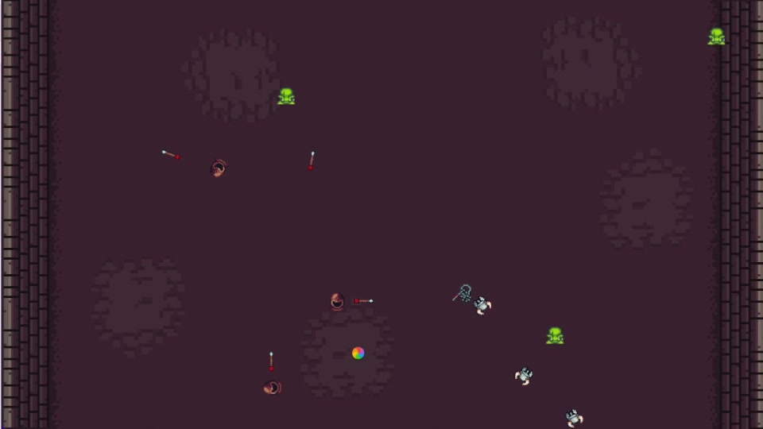

Selected projects from my CV, collected here so the homepage can stay focused.
University of Cambridge research workshop · August–October 2022
Cooperation with different action capabilities
Created a PettingZoo multi-agent environment and implemented PPO and DQN in an Archer–Knight–Zombie task. This was a separate workshop project exploring how agents with different action ranges interact.

4× speedOriginal simulation
Independent research with a Weill Cornell doctoral researcher · 2020
Learning to detect dendritic spines
Labeled microscopy data, compared Random Forest and Mask R-CNN approaches, and analyzed prediction errors. This early project developed my experience in dataset preparation and comparative evaluation.
A dialogue system with a memory of the conversation
Implemented intent recognition and a state machine for multi-turn dialogue using Rasa, connected external information services, and integrated the chatbot with WeChat.
React / Node.js web project · 2021
Candidate Profile
Built a candidate-information application using Ballotpedia data, supplementary news collection, CSV-to-JSON processing, and MongoDB. The work connected data preparation with a browsable frontend.